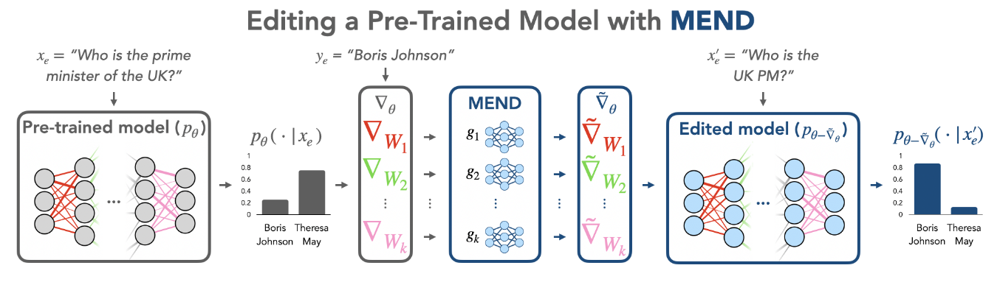

论文笔记 - FAST MODEL EDITING AT SCALE
1. Information
Title: FAST MODEL EDITING AT SCALE
Link: MEND
Paper
Source: International Conference on Learning
Representations (ICLR)
Date: 2022
2. Summary
本文介绍了一种名为模型编辑网络与梯度分解 MEND（Model Editor Networks with Gradient Decomposition）的新方法，用于高效编辑大型预训练模型，特别是那些参数超过 100 亿的模型。MEND 允许使用单个期望的输入输出对快速、局部地编辑模型行为，无需进一步微调。该方法利用微调梯度的低秩结构，实现可行且有效的大规模模型编辑。
3. Background
自然语言处理和计算机视觉中大型预训练模型的维护和更新挑战。尽管这些模型功能强大，但可能会出错或过时。传统的微调方法可能导致过拟合或计算成本高昂，尤其是对于非常大的模型。因此，需要一种方法能够在不影响模型在其他任务上的表现的情况下，纠正特定输入的模型输出。
4. Research Objective
本研究的主要目标是开发一种可扩展的算法，使大型预训练模型能够快速进行事后编辑。目标包括确保编辑后的模型保持可靠性（对编辑输入的正确输出）、局部性（对不相关输入的影响最小）和普遍性（对相关输入的正确输出）。
5. Method

5.1 问题定义
在模型编辑问题中，目标是使用单个输入输出对 \(\left(x_e, y_e\right)\) 来改变基础模型对于特定输入的 \(x_e\) 输出，同时保持对不相关输入的模型行为不变。这要求编辑操作具有可靠性、局部性和普遍性。
5.2 MEND 架构
MEND 通过训练一系列轻量级的模型编辑网络 \(g_{\ell}\) 来实现编辑。这些网络接收标准微调的梯度作为输入，并输出对应的梯度更新，以此来编辑预训练模型的权重。MEND 的关键特点是利用梯度的低秩结构，这使得参数化变得可行。
5.3 梯度分解
对于一个全连接层的梯度，MEND 利用梯度矩阵是 rank-1 的特性，将梯度分解为其 rank-1 的外积形式。具体来说，对于第 \(l\) 层的权重矩阵 \(W_l\)，其梯度可以表示为： \[ \nabla_{W_l} L=\delta_{l+1} u_l^T \] 这样，每个 MEND 网络的输入是微调梯度的两个因子 \(\left(\delta_{l+1}, u_l\right)\)，其中 \(\delta_{l+1}\) 是第 \(l+1\) 层的误差项，\(u_l\) 是第 \(l\) 层的输入。
5.4 参数化

MEND 通过多层感知器（MLP）来参数化这些梯度映射函数。每个 MLP 有一个隐藏层，并且使用低秩权重矩阵，以减少参数数量。具体来说，MEND 网络的参数化形式为： \[ h_l=z_l+\sigma\left(s_1^l \odot\left(U_1 V_1 z_l+b\right)+o_1^l\right) \]
\[ g\left(z_l\right)=h_l+\sigma\left(s_2^l \odot U_2 V_2 h_l+o_2^l\right) \]
其中，\(z_l=\operatorname{concat}\left(u_l, \delta_{l+1}\right)\) 是输入向量，\(\sigma\) 是激活函数，\(U_1, V_1, U_2, V_2\) 是低秩权重矩阵，它们通过低秩分解来减少模型的参数量。这种方法使得每个编辑网络可以用更少的参数来学习如何从梯度映射到参数更新，从而提高了计算效率。\(s_1^l, s_2^l, o_1^l, o_2^l\) 是层特定的缩放和偏移参数。
5.5 训练
MEND 使用编辑训练集 \(D_{e d i t}^{t r}\) 来学习每个编辑网络的参数。在训练过程中，对于每一层 \(l\)，MEND 计算原始梯度 \(\nabla_{W_{\ell}} p_{\theta_{\mathcal{W}}}\left(y_{\mathrm{e}} \mid x_{\mathrm{e}}\right)\)，然后使用 MEND 网络计算权重更新量 \(\tilde{\nabla}_{W_{\ell}}\)，最后更新权重 \(\tilde{W}=W_{\ell}-\alpha_{\ell} \tilde{\nabla}_{W_{\ell}}\)。
5.6 损失函数
MEND 的训练损失包括编辑成功 \(\left(L_e\right)\) 和编辑局部性 \(\left(L_{l o c}\right)\) 两个部分。具体来说： \[ L_{\mathrm{e}}=-\log p_{\theta_{\tilde{w}}}\left(y_{\mathrm{e}}^{\prime} \mid x_{\mathrm{e}}^{\prime}\right) \]
\[ L_{\text {loc }}=\operatorname{KL}\left(p_{\theta_{\mathcal{W}}}\left(\cdot \mid x_{\text {loc }}\right) \| p_{\theta_{\tilde{w}}}\left(\cdot \mid x_{\text {loc }}\right)\right) \]
其中，\(\left(L_e\right)\) 衡量模型是否成功更新了编辑示例的输出，而衡 \(\left(L_{l o c}\right)\) 量编辑是否影响了不相关输入的模型行为，模型的总损失如下： \[ L_{\mathrm{MEND}}=c_{\mathrm{e}} L_{\mathrm{e}}\left(\theta_{\tilde{\mathcal{W}}}\right)+L_{\mathrm{loc}}\left(\theta_{\mathcal{W}}, \theta_{\tilde{\mathcal{W}}}\right) \] 在 MEND 中，使用编辑后的模型参数 \(\tilde{W}\) 来计算训练损失，这些损失将被反向传播到编辑网络中。这个过程不涉及预训练模型的参数优化。
6. Conclusion
MEND 通过梯度分解和轻量级编辑网络，实现了对大型预训练模型的快速和局部编辑。这种方法不仅减少了参数数量，而且通过利用梯度的低秩结构，使得编辑操作变得高效和可扩展。